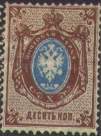
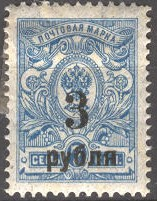
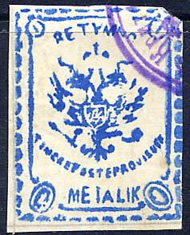
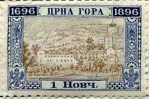
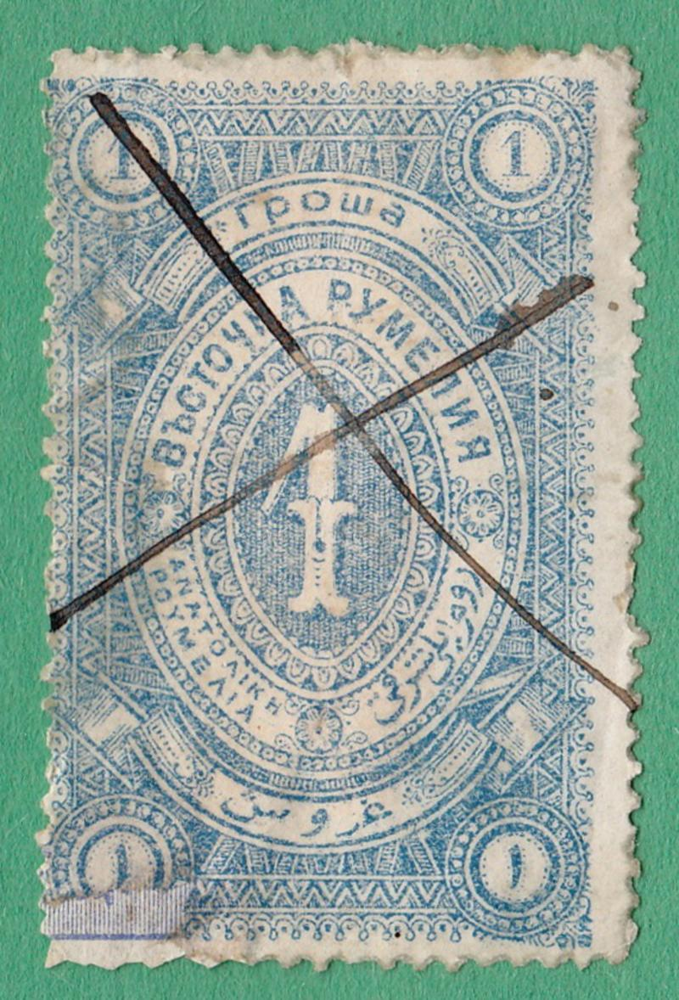

Russie - Russland - Rusland
Return To Catalogue - Eagle issues 1858-1922 (small sizes), part 1 - Eagle issues 1858-1922 (small sizes), part 2 - Eagle issues 1858-1922 (large sizes) - Eagle issues, various overprints - 1905-1913 issues - 1914-1918 issues - Sowjet Union, part 1 - Sowjet Union, part 2 - Sowjet Union, part 3 - Zemstvos (local) issues - Non issued stamps - Cancellations - Fiscal stamps - Postal stationary and telegraph stamps - Russian postoffices in Turkey, part 1, 1863 issue - Russian post offices in Turkey, part 2 - Russian post offices in Turkey, part 3 - Russian postoffices in Turkey, part 4 - Russian post offices in China - Russain post offices in Crete - South Russia
Note: on my website many of the
pictures can not be seen! They are of course present in the
catalogue;
contact me if you want to purchase the catalogue.
Small sizes, part 1 and part 2

Just after World War I many overprints were issued on stamps of Tsarist Russia. Eagle issues, various overprints ,part 1 and part 2



Russian stamps overprinted with arms of
Ukraine


Example

(Kuban overprint)
Some overprints on these stamps were issued for the Kuban region.

Example of a fiscal stamp.
Russia Fiscal stamps, part 1
Russia Fiscal stamps, part 2
Russia Fiscal stamps, St.Petersburg

A label with inscription: 'For the use of families of those called up to the war' (World War I? information obtained from Robert Scott, Greece):
Examples:

(Example of a Chita stamp)
(Siberia)
Examples:
(South Russia, Rostov issue, inscription 'EPMAKb')

(Denikin Army stamp, South Russia, inscription 'EDNHAR POCCIR')

(White Russia; inscription 'ACObHbI ATPAD)

(Example of the Northern Army stamps: inscription 'OKCA')




(A few examples of the many zemstvo stamps that were issued in
Tsarist Russia)
Normally an inscription equivalent or similar to "3EMCKAR" can be found on these local stamps.

Probably some kind of parcel stamp for St.Petersburg?
SERBIA: inscriptions "CPBNJA", "POWTA" or "CPPCKA", examples:

MONTENEGRO: inscriptions "UP. GOPE" or "PPHA GOPA", examples:

BULGARIA: inscription "bbLGAPCKA POWA" or similar, the value is in "CTOT" or "LEBA"


Fiscal stamp of Eastern Rumelia
ObPA3EUb (Obrazets) = Specimen (overprint on stamps)
http://www.rossica.org/forum/ : nice forum about classical Russian stamps.

{kind=link}